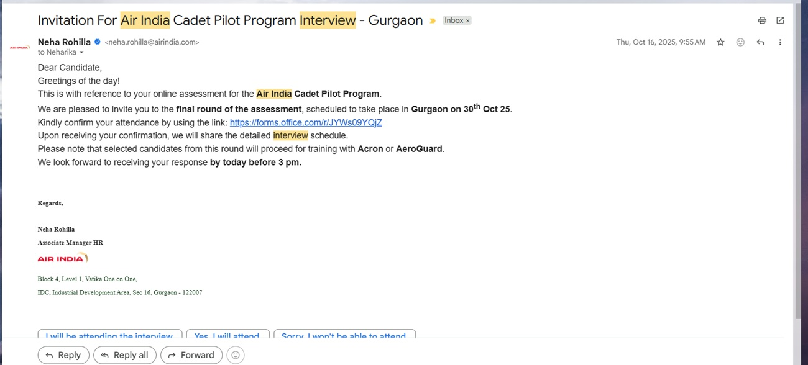
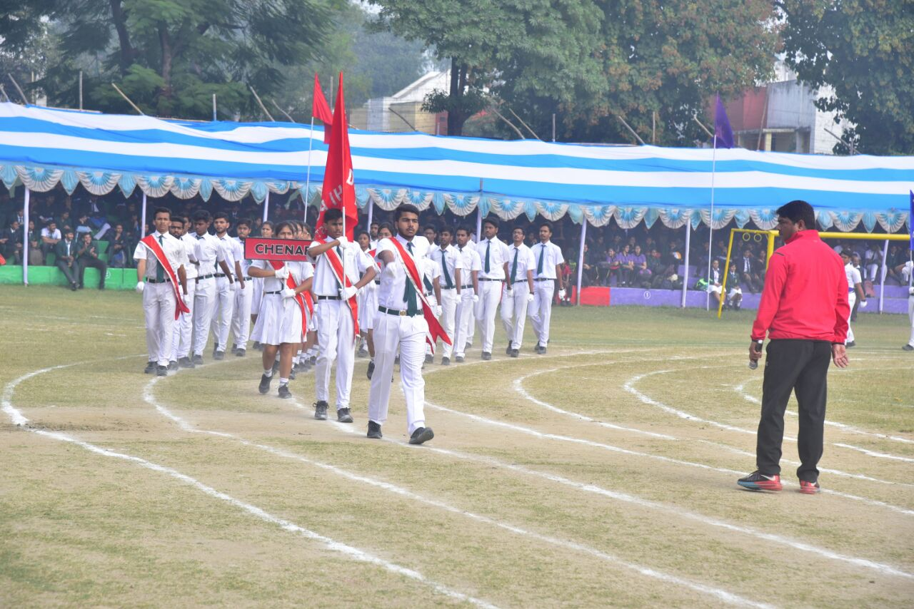

Prepared in support of a sponsorship request for Commercial Pilot Training.
Shubham Kumar · Commercial Pilot Aspirant
My family gave me an education. I spent years turning it into an opportunity. Today, I ask only for the chance to complete the journey they began.
Before You ReadFROM DREAM TO COCKPIT
Before You Read
A personal opening note
Dear Sir/Madam,
Thank you for taking the time to read this document. Before you begin, I would like to make one thing clear.
This is not a proposal built around financial hardship. Nor is it an attempt to convince you that my journey has been more difficult than anyone else's. Across our country, there are thousands of talented young people working tirelessly towards their dreams, and I have great respect for every one of them.
This document has a much simpler purpose. It records the decisions I have made over the last several years. Whenever I encountered an obstacle, I tried to overcome it rather than accept it. When I discovered that Mathematics was mandatory for Commercial Pilot training, I returned to study it after nearly six years. When relocating for coaching became financially difficult, I chose online training to reduce the burden on my family. When I realised that aviation — not medicine — was the profession in which I genuinely wanted to build my future, I made the difficult decision to change careers.
This proposal is not asking anyone to believe only in my potential. It is asking you to consider the work that has already been done.
The pages that follow contain my journey, my achievements, my family's sacrifices and the roadmap I have built for the future. If, after reading them, you believe I am worthy of your trust, I would be deeply honoured.
With sincere gratitude,
Shubham Kumar
Executive SnapshotFROM DREAM TO COCKPIT
Executive Snapshot
The candidate in one page
Personal Information
Particular
Details
Name
Shubham Kumar
Date of Birth
28 July 2001
Hometown
Bokaro Steel City, Jharkhand
Qualification
B.Sc. Biotechnology (First Class)
Aviation Eligibility
NIOS Mathematics Completed
Medical Status
DGCA Class 1 Medical — FIT
DGCA Progress
92Air RegulationsFirst Attempt
92Aviation MeteorologyFirst Attempt
78Air NavigationFirst Attempt
Primary Path
Most Financially Responsible OptionAirline Cadet Programme
↓
Commercial Pilot
↓
Captain — Commercial Aviation
Journey TimelineFROM DREAM TO COCKPIT
Journey Timeline
A journey already years in the making
201710 CGPA — CBSE Class 10. Achievement published in the local newspaper.
2024Career pivot — chose aviation as a deliberate, lasting decision.
2025Completed NIOS Mathematics. Became eligible for Commercial Pilot training.
May 2025DGCA Aviation Meteorology — 92%, first attempt.
July 2025DGCA Air Regulations — 92%, first attempt.
Jan 2026DGCA Air Navigation — 78%, first attempt.
2026DGCA Class 1 Medical — FIT.
FutureCommercial Pilot, and in time, Captain.
Act I · FoundationsFROM DREAM TO COCKPIT
Act I · Foundations
The Boy Who Never Looked Out of the Window
Curiosity began before the first flight
Every summer vacation, my classmates returned to school with stories of family holidays. Many had travelled by air. They spoke excitedly about the view from the aircraft window, the clouds beneath them and the thrill of flying for the first time.
I listened carefully to every story. But unlike many children, I never found myself wondering what it would feel like to sit beside the window.
Who is the person flying the aircraft?
That question fascinated me far more than the view outside. At that age, I knew almost nothing about aviation. I had never heard of the Directorate General of Civil Aviation, did not know what a Commercial Pilot Licence was, had never met a pilot, and no one in my school had ever become one.
Throughout my school years, travelling by air was beyond my family's financial reach. My first flight came much later during college, on an IndiGo aircraft. Ironically, the dream had existed long before the first flight.
Looking back today, I realise that my dream never began with airplanes. It began with responsibility. Perhaps that is why, even today, the title that inspires me most is not simply Pilot. It is Captain.
Act I · FamilyFROM DREAM TO COCKPIT
Act I · Family
The Family That Chose Education
A small tailoring shop, a larger purpose — and a mother who refused to compromise
There are moments in life that seem ordinary while they are happening but become extraordinary when viewed years later. For me, many of those moments began inside a small ladies' tailoring shop measuring barely thirty-five to forty square feet.
It was never a large business. Yet that small shop achieved something remarkable — it educated two children. Every school fee, every tuition class, every notebook, every examination form and every uniform was paid for through its earnings.
If my father taught me responsibility, my mother taught me belief. When my education began, there were schools that would have been far easier for our family to afford. My father naturally considered them. My mother saw something different.
She told my father that if working harder was necessary, she would work harder — but her son would study at Delhi Public School, Bokaro. Through the years, she quietly gave up many of her own wishes. New clothes could wait. Personal comforts could wait. My future could not.
Prabhat Khabar, 4 June 2017 — the Class 10 achievement, preserved as family history.
The first time my parents saw my name in print, they laminated it. I hope one day they hear my voice from the cockpit.
Act I · Choosing the Right DreamFROM DREAM TO COCKPIT
Act I · Choosing the Right Dream
The Dream Called Medicine
A sincere path, then an honest pivot
After completing Class 12, I enrolled in a Bachelor of Science in Biotechnology while simultaneously preparing for the National Eligibility cum Entrance Test (NEET). Medicine was not simply my father's dream — it became my dream as well.
Like many students from middle-class families, I believed that securing admission to a Government Medical College could transform not only my own future but also my family's. A government MBBS seat represented stability, dignity and the possibility of changing our family's future through education rather than circumstance.
Between 2019 and 2024, I prepared sincerely for NEET while completing my graduation. Although I was unable to secure a Government MBBS seat, I have never considered those years wasted. They taught me how to study consistently, how to recover from disappointment and how to keep moving forward.
By 2024, I had reached a crossroads. If my family was going to continue investing years of effort and substantial financial resources in my future, it should be for a profession to which I genuinely wanted to dedicate my life.
I did not choose aviation because medicine defeated me. I chose aviation because I finally understood where I truly belonged.
Act I · Becoming EligibleFROM DREAM TO COCKPIT
Act I · Becoming Eligible
Becoming Eligible
The NIOS Mathematics chapter
The day I decided to pursue aviation, I also discovered my first major obstacle. I was not eligible.
Like many students who choose Biology after Class 10, I had never studied Mathematics in Classes 11 and 12. No one in my school had ever pursued commercial aviation. Neither my parents nor I knew that Mathematics was mandatory for obtaining a Commercial Pilot Licence.
While researching possible solutions, I learned about the National Institute of Open Schooling (NIOS), which allowed students like me to complete the required Mathematics qualification.
Nearly six years had passed since I had last studied Mathematics seriously. Every chapter felt unfamiliar. Every formula demanded patience. For roughly two months, my daily routine revolved entirely around Mathematics — and when the results were declared, I had secured 67 out of 100.
Eligibility Milestone
67NIOS MathematicsOut of 100
The qualification that made Commercial Pilot training possible. It was the first obstacle I chose to overcome rather than accept.
The purpose of changing careers was not to choose an easier path. It was to choose the right one.
Act II · First Step Into AviationFROM DREAM TO COCKPIT
Act II · First Step Into Aviation
The First Step Into Aviation
Learning with financial responsibility
Once I became eligible, the next question was straightforward: where should I begin?
After researching different DGCA ground schools, I chose an online programme instead of relocating to another city. For many students, classroom coaching is the preferred option. For me, online learning was a carefully considered financial decision.
Living away from home would have meant additional expenses for accommodation, food and transportation. By studying online, I was able to reduce those costs significantly while continuing to receive quality instruction.
Every financial decision mattered — not because I wanted the cheapest option, but because I wanted to use my family's resources responsibly. That principle has remained constant throughout my journey, and it will remain constant in the pathway I ultimately choose.
Gradually, aviation stopped feeling like a distant dream and started becoming a subject I could understand, prepare for, and prove myself in.
Act II · Building the Right to FlyFROM DREAM TO COCKPIT
One of the most unexpected milestones in my aviation journey was not clearing an examination. It was teaching one.
Following my performance in DGCA Air Regulations, I conducted a DGCA Air Regulations batch for five aspiring pilots at AeroNiti Aviation Academy.
Preparing others to sit the same examination demanded a far deeper command of the subject than passing it myself. Explaining every regulation clearly, anticipating questions and guiding students through difficult concepts reinforced my own knowledge and strengthened my commitment to aviation as a lifelong profession.
Batch ConductedAeroNiti Aviation AcademyDGCA Air Regulations Batch Conducted
Official AeroNiti Aviation Academy poster announcing the batch.
Act II · Airline PathwaysFROM DREAM TO COCKPIT
Act II · Airline Pathways
The First Airline Opportunity
Application milestones and financial realism
Every aspiring pilot dreams of an email that says, "Congratulations. You have progressed to the next stage." For me, that arrived when I applied for the Air India Cadet Pilot Programme and cleared the CUT-E assessment.
Soon afterwards, an interview invitation followed — for candidates joining Air India's USA-based training partners, at a programme cost exceeding ₹1.5 crore.
At that moment, excitement gave way to reality. The international pathway, while excellent, was simply beyond what my family could responsibly consider. I have also progressed through the Akasa Air cadet application, and I continue to pursue every credible airline-linked opportunity available to me.
Responsible decisions are part of becoming a responsible Captain.
Air India Cadet Pilot Programme — CUT-E assessment cleared.

Air India Cadet Pilot Programme — interview invitation.Akasa Air Cadet Programme — application progress.
Act II · One Dream, Two RoadsFROM DREAM TO COCKPIT
Act II · One Dream, Two Roads
One Dream. Two Roads.
Two genuine routes to the cockpit — and an honest comparison of each
Airline Cadet Programme
An airline cadet programme provides a structured pathway from training directly toward airline induction, with clearly defined standards at every stage.
Selected candidates who successfully complete the programme typically receive a Letter of Intent or an airline-linked pathway, which provides significantly greater employment certainty than an open-market route.
This certainty matters greatly to someone like me, whose primary goal is to minimise financial risk for his family. A structured route toward airline operations offers the clearest line from training to employment.
Conventional CPL Route
The conventional route is more flexible and carries a lower initial cost, progressing through flight training, the remaining examinations, RTR, type rating and airline induction.
However, airline recruitment depends upon vacancies. The waiting period after obtaining a CPL can be unpredictable.
Because employment timing is uncertain and education finance is difficult to secure without substantial collateral, this route carries greater financial risk for a family in our position — the very risk I am most determined to avoid.
Both roads lead to the cockpit. The cadet route simply carries less risk for the people who supported me first.
Act III · Responsible PathFROM DREAM TO COCKPIT
Act III · Responsible Path
Financial Transparency
A realistic understanding of the commitment required
I believe complete financial transparency is an essential part of seeking sponsorship. The figures below are based on current industry estimates and may vary depending upon the Flight Training Organisation, airline and market conditions at the time of admission.
Training Pathway A — Airline Cadet Programme
Component
Estimated Cost
Indian Airline Cadet Programme
approx. ₹94 lakh – ₹1 crore
International Airline Cadet Programme
approx. ₹1.2 – 1.6 crore
Total Estimated Cost: ₹94 lakh – ₹1.6 crore
My preferred pathway is an airline cadet programme because it provides structured training and a direct pathway toward airline operations. The final training provider will depend on programme selection, availability, and the funding structure agreed with the sponsor.
Training Pathway B — Conventional CPL Route
Component
Estimated Cost
CPL Flight Training (incl. stay & meals)
₹75 lakh
RTR Ground Training
₹50,000
Remaining DGCA Examination Fees
₹5,000
DGCA Class 1 Medical
Already Completed
Type Rating & Airline Training
₹30 – 32 lakh
Total Estimated Cost: approximately ₹1.06 – 1.08 crore
This pathway may be pursued in India or overseas, depending on the selected Flight Training Organisation and funding arrangement.
My Preferred Support Structure
My primary request is for a scholarship or sponsorship that enables me to complete my commercial pilot training.
I also recognise that different organisations have different funding policies. If a full sponsorship is not possible, I would sincerely appreciate the opportunity to discuss alternative support structures, such as partial sponsorship combined with an interest-free or low-interest education loan, or any other arrangement your organisation considers appropriate.
My commitment remains the same: to complete my training successfully, build a long-term career in commercial aviation, and honour the confidence placed in me.
Act III · The Honest QuestionFROM DREAM TO COCKPIT
Act III · The Honest Question
Why Sponsorship Instead of an Education Loan?
A responsibility — not an escape from responsibility
One of the most reasonable questions anyone can ask is: "Why not simply take an education loan?" For many students, that is indeed the right solution. For my family, however, the situation is different.
Our household income is modest and irregular, derived primarily from our family's agricultural land in Bihar; my mother is a homemaker. We live in a rented house and manage ongoing household and medical expenses. Our economic status is formally recognised by the Government of Bihar EWS certificate enclosed in this dossier.
Commercial Pilot training requires an investment that can approach or exceed one crore rupees. Loans of this magnitude generally require substantial collateral or other financial security that our family does not possess.
More importantly, aviation is a dynamic profession. If employment were delayed after training, the burden of repayment would immediately fall upon my family. After everything my parents have already sacrificed to educate me, I cannot knowingly place them under that level of financial pressure.
Government of Bihar EWS Certificate — supporting proof of economic eligibility status.
My goal is to ensure that the greatest possible risk is carried by me, through hard work and commitment — not by my parents, through financial burden.
Act IV · Investment Already MadeFROM DREAM TO COCKPIT
Act IV · Investment Already Made
Before Anyone Else Invested in Me
The first investments were made by my parents
When people speak about investment, they often think about money. For me, the first investments in my life were never made by banks, institutions or sponsors. They were made by my parents — who, long before I chose aviation, had already spent decades investing in the one thing they believed could transform our family's future: education.
A Small Shop With A Big Purpose
Throughout my childhood, my parents jointly ran a ladies' tailoring shop of barely thirty-five to forty square feet. It was a small shop — yet within those four walls, my parents built something far larger than a business. They built opportunities.
The Deliveries I Never Understood
On winter evenings, after closing the shop, my father would place stitched clothes on his scooter and leave again. Years later I understood: sometimes groceries were needed, sometimes school expenses could not wait. He was quietly delivering stability to our family.
The Woman Who Refused To Compromise
And through it all stood my mother, who refused to compromise on education. Whenever family finances became limited, my education always came first. New clothes could wait. Personal comforts could wait. My future could not. Her belief, more than any sum of money, was the first true investment made in me.
Act IV · GratitudeFROM DREAM TO COCKPIT
Act IV · Gratitude
Gratitude Beyond My Own Family
A commitment shaped by kindness received
Every family carries memories that quietly shape the way they see the world. One such memory changed mine forever.
In 2012, my mother underwent Balloon Valvoplasty at the Sri Sathya Sai Institute of Higher Medical Sciences, Prasanthi Nilayam. At that time, my family could not have afforded such treatment. The hospital provided world-class medical care completely free of cost. Because of that generosity, my mother received treatment at the right time. She survived.
As I grew older, I realised something extraordinary. Someone, somewhere, had chosen to create an institution where a family's financial condition would never determine whether a mother received life-saving treatment.
Success becomes meaningful only when it creates opportunities for others.
One of my personal commitments is that once I begin my professional career, I will regularly contribute to the Sri Sathya Sai Institute. If my contribution helps another family receive the same hope that mine once received, it will be one of the most meaningful uses of my earnings.
Act V · The Captain I Aspire To BecomeFROM DREAM TO COCKPIT
Act V · Aspiration
The Captain I Aspire To Become
The word that stayed with me — and the professional I intend to be
People often ask, "Why do you want to become a pilot?" For me, the answer has never been simple. Even before I understood aviation, I admired responsibility. As a child, whenever I heard, "This is your Captain speaking…" I thought about the responsibility carried by the person making that announcement.
Hundreds of passengers. A sophisticated aircraft. Critical decisions made every day. Lives entrusted to one cockpit. That responsibility fascinated me. During school, I joined the Student Council, served as a Prefect, became Vice Captain, and eventually earned the Captain badge.

Student Council leadership — where the word Captain first meant trust and responsibility.
Fifteen Years From Today
I imagine thousands of flying hours, a calm voice in difficult situations, and a reputation built upon professionalism. By then, I hope to have earned the rank of Captain through dedication rather than shortcuts. The best pilots are remembered not because passengers notice them, but because passengers never have to think about them.
Beyond Aviation
One day, I want to establish a charitable veterinary hospital for stray dogs and cattle in my hometown of Bokaro. Success, to me, has never been about the uniform or the prestige. It means becoming the kind of professional whom passengers trust without ever knowing personally.
Ladies and Gentlemen, this is your Captain speaking…
Act VI · Return on TrustFROM DREAM TO COCKPIT
Act VI · Return on Trust
The Return On Your Trust: My Promise
What sponsorship would mean in practice
Every investment seeks a return. Financial investments generate financial returns. Educational investments generate knowledge. I believe sponsorship generates something even more valuable — trust. If someone chooses to support my journey, they are investing in far more than flight training. They are investing in my character, my discipline, my judgement and my future.
I will pursue my training with complete dedication and professionalism.
I will choose the most financially responsible pathway without compromising the quality of training.
I will keep my sponsor informed about every significant milestone throughout my journey.
I will represent the values of integrity, discipline and humility throughout my career.
I will never forget that someone believed in me before I had the opportunity to prove myself fully.
One day, when I walk into an aircraft wearing four stripes on my shoulders, I will know that those stripes were earned through years of collective faith and sacrifice.
Beyond FundingFROM DREAM TO COCKPIT
Beyond Funding: Understanding the Journey
How commercial pilot training is structured — and why support is needed early
Section 1 · Understanding the Training Journey
Airline Cadet Programme
Application
↓
Assessment Fee
↓
ADAPT / CUT-E
↓
Interview
↓
Letter of Intent (LOI)
↓
First Instalment
↓
Training Begins
↓
Remaining Instalments
Cadet programmes involve several competitive selection stages. A Letter of Intent is issued before training begins, and the seat is confirmed once the initial instalment is paid. Fees then follow the airline's milestone-based schedule rather than a single upfront amount.
Conventional CPL Route
Choose Flight Training Organisation
↓
Admission Discussion
↓
Receive Fee Structure
↓
Booking Amount
↓
Training Begins
↓
Remaining Instalments
Flight Training Organisations follow predefined payment schedules. Admission is confirmed after an initial booking amount, with the balance paid in instalments during training.
Understanding Why Sponsorship Is Needed Before Admission
Unlike most university programmes, both the cadet and conventional routes require an initial financial commitment before a seat is confirmed. Support is therefore usually needed before training can be secured — and, depending on the sponsor's preferred model, can follow these published instalment schedules rather than a single upfront payment.
Section 2 · Why This Opportunity Matters
Commercial pilot training is unlike many other educational pathways. The financial barrier to entry is exceptionally high, yet the profession demands years of disciplined preparation, technical competence, sound judgement, and continuous accountability.
Over the past several years, I have focused on demonstrating that I am prepared for that responsibility—not only through academic performance, but also by independently meeting DGCA eligibility requirements, obtaining a DGCA Class 1 Medical Certificate, clearing multiple DGCA examinations on my first attempt, and teaching aviation subjects to aspiring pilots.
My request is not based solely on potential. It is based on preparation that has already taken place. Financial support would not create that preparation—it would enable me to complete the final stage of a journey that is already well underway.
Section 3 · My Commitment to Every Sponsor
🔑
Responsible Use of Funds
Any financial assistance entrusted to me will be used exclusively for my commercial pilot training and directly related educational expenses.
📊
Transparency & Accountability
I will maintain complete transparency regarding the use of funds and, if requested, provide periodic progress updates throughout my training.
🤝
Paying the Opportunity Forward
As my career progresses, I aspire to support deserving students pursuing aviation, carrying forward the opportunity that may be extended to me today.
Closing NoteFROM DREAM TO COCKPIT
Closing Note
With respect and gratitude
Dear Sir/Madam,
By now, you know much more than my academic record. You know where I come from. You know the decisions that shaped my journey. You know the values my parents taught me. And you know the responsibility with which I intend to build my career.
Throughout this dossier, I have tried to present myself honestly. I have not attempted to portray my journey as extraordinary. Thousands of families across India work hard every day to educate their children. Mine is one of them. The difference is that today I have the opportunity to ask for help in completing a journey that has already been years in the making.
If you choose to support me, I assure you that your trust will never be taken for granted. Every examination I clear, every milestone I achieve, every passenger I safely carry and every announcement I make from the cockpit will remind me that my journey was made possible not only by my own efforts, but also by the faith someone placed in me.
Regardless of your decision, thank you for reading my story. Thank you for giving your time to someone you had never met before today. That generosity alone deserves my sincere gratitude.
With respect,
Shubham Kumar
Evidence & Verification PortfolioFROM DREAM TO COCKPIT
Evidence & Verification Portfolio
Documents enclosed in support of this dossier
🎓
Academic Records
CBSE Class 10 Marksheet
CBSE Class 12 Marksheet
B.Sc. Biotechnology Degree & Marksheet
✈
DGCA Records
Aviation Meteorology — 92%, First Attempt
Air Regulations — 92%, First Attempt
Air Navigation — 78%, First Attempt
Technical General — to be added after result
✚
Medical & Financial
DGCA Class 1 Medical Assessment — FIT
EWS Certificate, Government of Bihar
Passport / Aadhaar, if required by sponsor
📧
Airline Applications
Air India CUT-E Qualification Email
Air India Interview Invitation
Akasa Air Cadet Programme Application
📰
Family & Legacy
Laminated Newspaper Clipping — Class 10 result, Prabhat Khabar, 2017
📚
Teaching Experience
AeroNiti Aviation Academy — DGCA Air Regulations Batch Conducted (Supporting Poster Attached)
Final NoteFrom Dream to Cockpit
From Dream to Cockpit
One opportunity can change a career.
One career can change a family.
One family's journey can inspire many more.
"I am not asking for sponsorship to earn a licence. I am asking for the opportunity to earn the right to be called Captain."